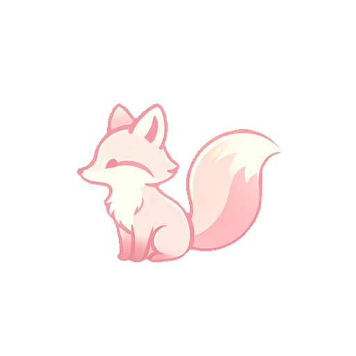

z Z
正在加载灵汐...
灵汐思考中
执行中...
对话
更换模型
隐藏龙虾
动作 · 表情
睡觉
跳舞
挥手
开心
思考
发呆
疑惑
害羞
生气
慵懒
姿势
转身
点头
摇头
鞠躬
跳一下
肢体动作
蹲下
坐下
站起来
伸懒腰
思考
害羞
鼓掌
指向
打哈欠
叉腰
重置
Live2D
动作模组
设置
主界面
退出
角色状态机
侧躺
浮空
睡眠
唤醒
退出状态机
F9 收起 · 唤醒=伸懒腰→打哈欠→起身
回车发送 · 灵汐会像人一样操作电脑